Plano de migração13 out. 2026
Seu WhatsApp.
Mais estável no Kommo.
Plano para sair do WhatsApp Lite e conectar o número à plataforma oficial, mantendo o app no celular se a Meta habilitar a coexistência.
Volume alto. Canal de envio ainda precisa ser separado.
Não vamos transformar atividade do CRM em custo Meta.
- 13.226 atividades enviadas no CRM no período consultado.
- 7.270 recebidas pelo WhatsApp Lite e 378 pelo Instagram no painel.
- O painel de WhatsApp Business passa a medir mensagens enviadas/entregues e custos por modelo.
- Quantas das atividades enviadas saíram pelo WhatsApp.
- Quantos contatos únicos foram alcançados em cada dia.
- Quantas mensagens foram entregues e quantas são serviço, utilidade ou marketing.
O número fica no celular e na caixa de entrada do Kommo.
A conexão de coexistência vincula o WhatsApp Business app à integração oficial. A elegibilidade é decidida pela Meta com base na conta e na qualidade de uso.
WhatsApp Business app
A equipe mantém o uso do aplicativo, com versão 2.24.17 ou superior.
WhatsApp Business no Kommo
Atendimento compartilhado, organização no CRM e acesso a métricas próprias do canal.
Preparar, conectar e validar com a equipe.
Propriedade do número, Business Portfolio, acesso administrativo e elegibilidade.
Plano e licenças Kommo, faturamento Meta, modelos e automações dependentes.
Kommo → WhatsApp Business → instalar → selecionar número Lite → migrar e parear pelo QR.
Chats ativos nos últimos 30 dias; mensagens importadas com até 30 dias.
Envio, recebimento, app, CRM, modelos, notificações, automações e qualidade.
O custo acompanha mensagens entregues e a categoria.
Tarifas de referência do Brasil a partir de 01/10/2026. Cobrança depende de categoria e entrega. O volume de 13.226 no CRM mistura canais e não pode ser usado como base de fatura.
A integração oficial já está incluída no plano Básico.
| Plano | Por usuário/mês | 6 meses por usuário | WhatsApp incluído |
|---|---|---|---|
| Básico | R$ 100 | R$ 600 | 1 número; integração oficial |
| Avançado | R$ 150 | R$ 900 | 3 números; automações e transmissões |
| Pro | R$ 224 | R$ 1.344 | Números ilimitados |
Referência BRL por licença no período mínimo de 6 meses, publicada em outubro de 2026. O valor exato depende do prazo e da condição de compra. Plano e número de licenças atuais não confirmados; por isso, o cenário incremental não soma novamente a assinatura existente. Qualquer plano pago permite integrar mensageiros; Básico atende à conexão do WhatsApp.
O valor da Meta depende do canal e do tipo de envio.
O Kommo não separa o canal desses 13.226 envios no relatório consultado. A tabela mostra cenários; a fatia WhatsApp e a proporção de marketing são hipóteses, não uma medição.
| Fatia dos envios assumida como WhatsApp | Mensagens no mês | Só serviço¹ | 90% serviço + 10% marketing² | Só marketing³ |
|---|---|---|---|---|
| 25% | 3.307 | R$ 80,75 | R$ 175,64 | R$ 1.063,86 |
| 50% | 6.613 | R$ 196,46 | R$ 385,96 | R$ 2.127,40 |
| 75% | 9.920 | R$ 312,20 | R$ 596,61 | R$ 3.191,26 |
| 100% (teto do CRM) | 13.226 | R$ 427,91 | R$ 807,21 | R$ 4.254,80 |
Cenário-base: 50% dos registros enviados seriam WhatsApp e, destes, 90% serviço e 10% marketing. Hipótese, não medição. ¹ Serviço: R$ 0,035 após 1.000 grátis/número/mês. Utilidade: R$ 0,035 entregue, sem franquia. Marketing: R$ 0,3217 entregue. Se 100% do volume fosse WhatsApp na mesma proporção, Meta ≈ R$ 807,21/mês; somente marketing seria o teto teórico de R$ 4.254,80. Sem custos de terceiros ou tributos.
O custo fica claro quando confirmarmos três números.
Valor da fatura atual Kommo e quantidade de licenças, consultados por administrador em Faturamento → Meu plano.
Envios WhatsApp entregues por dia e por categoria após conectar a integração oficial.
Participação de templates de marketing versus serviço/utilidade. Essa proporção é a maior fonte de variação no orçamento.
Fontes: planos e recursos Kommo · referência de preços Kommo em BRL, out/2026 · regras Meta e cobrança na Kommo · rate cards Meta · assinatura, assentos e faturamento Kommo · migração e coexistência